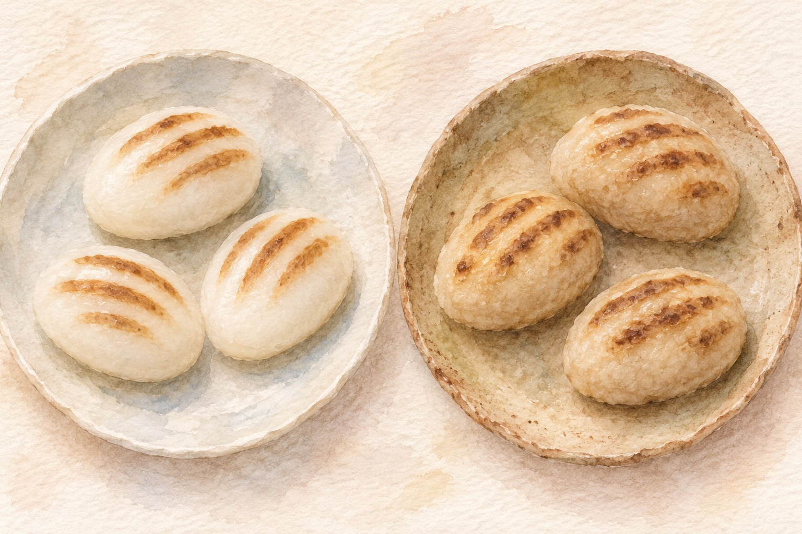
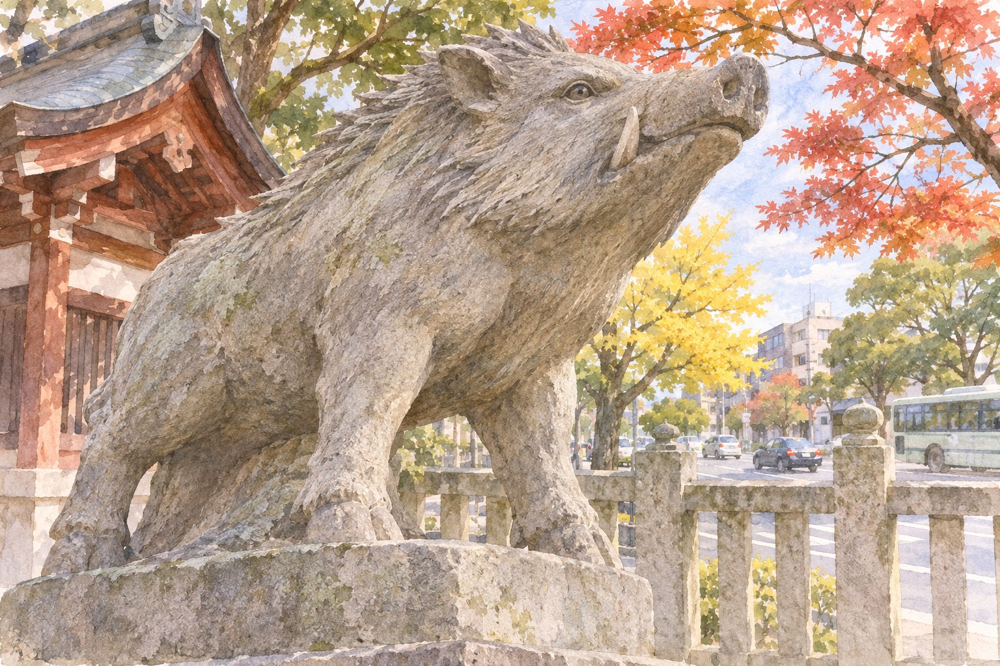

Kyoto and western Japan · 9 November 2026 · sweets on sale through November
The Boar Day You Light the Fire
In Japanese homes, the kotatsu traditionally came out on a boar day, and tea rooms still open their sunken hearths on one. Wagashi shops mark it with a sweet shaped like a striped piglet. In 2026 the day is Monday 9 November.
亥の子 inokoKyoto · Imperial Palace west side · HigashiyamaFacts checked 2 November 2026
AI-generated illustration · An imagined scene, not a photograph or an exact depiction of the place or event.
You have seen the autumn leaves at Tōfuku-ji, or decided the queue wasn't worth it. Early November in Kyoto has a second, quieter calendar running alongside the leaves, and it is written in the window of every serious sweet shop: a small brown oval with three faint stripes on its back, labelled 亥の子餅.
This is not a festival you go and watch. It is a date that explains things you will see anyway: why a tea-ceremony sweet looks like a baby boar, why a Kyoto shrine has boars where every other shrine has lion-dogs, and why your grandmother-age host might say the kotatsu "can come out now". The trade-off: there is no parade and no single place to be. What you get is a reason to walk between three shops and a shrine, and a sweet that is only sold for a few weeks.
A day picked by the calendar, not by the weather亥の子 · inoko
The old Japanese calendar labels every day with one of twelve animals, in a fixed cycle, so each animal comes round every 12 days. Inoko (亥の子, "child of the boar") is the first boar day (亥の日, i no hi) of the tenth month of the old lunar calendar. Because the lunar month drifts against the modern calendar, the date moves every year. In 2026 it falls on 9 November, which is also the first boar day of November in the modern calendar. The next boar days are 21 November and 3 December.
The custom started at court. The earliest written mention is in a manual for palace secretaries from the Jōgan era (859–877). On this day the court handed out rice cakes to its people, with the colour set by rank, and they were meant to be eaten at the hour of the boar, roughly 9 to 11 at night. Under the shoguns, Edo Castle gave rice cakes to the lords on the same day, then called genchō (玄猪). Families ate them to pray for health and many children, the boar being an animal that has large litters.
The day itself is one Monday, but the shops spread the sweet across most of November. If you miss 9 November, 21 November is the next boar day.
Why a boar keeps the house from burning亥は水 · i wa mizu
In the Chinese five-phase system, each of the twelve animals belongs to an element, and the boar belongs to water. Water puts out fire. So a fire first lit on a boar day, in the boar's month, was believed less likely to get out of hand. In the Edo period this became a household rule: if you are going to bring the kotatsu out, do it on inoko.
Tea people took the same date for the biggest change in their year. From May to October the kettle sits on a portable brazier (風炉, furo). In November it moves to the ro (炉), a square hearth cut into the tatami floor, and a tea room "opens the hearth": robiraki (炉開き). Many schools do this on a November boar day, and the sweet for the occasion is inoko-mochi. That is why the most demanding Kyoto confectioners, the ones who make sweets for tea masters, all have it in the window now.
One belief, boar equals water, explains the heater, the hearth and the sweet all landing on the same date.
What you are actually buying亥の子餅 · inoko-mochi
There is no single recipe. The court version was steamed rice mixed with azuki beans, pinkish, with pieces of chestnut set into it to suggest a boar's bones. Today each shop makes its own: usually a soft mochi or gyūhi skin around bean paste, often with sesame, chestnut, walnut or dried persimmon worked in, and stripes pressed or toasted onto the back to look like an uribō (うり坊), a young wild boar, which really does have stripes.
Many are made to be eaten the same day. Suzukake, for example, lists its 2026 version as walnut gyūhi around smooth bean paste, sold 1 to 9 November in store only, with a shelf life of "same day". Do not buy one in the morning for the flight home.

AI-generated illustration — not an on-site photograph. An imagined scene inspired by this section, not an accurate depiction of the real place, objects or event.
At the counter, if you don't see it in the case: 亥の子餅はまだありますか (inoko-mochi wa mada arimasu ka). Small shops sell out by afternoon.
Before you pay, to know whether it survives until tomorrow: 明日まで持ちますか (ashita made mochimasu ka).
Shop
2026 period (as listed)
Price
Note
Kanshundō 甘春堂
26 Oct to about end of Nov, until sold out
¥540 (online listing)
Kyoto. Head shop in Higashiyama, open daily
Toraya とらや
1–30 Nov, in store
check in store
Has a Kyoto shop and tea room (京都一条店)
Tsuruya Yoshinobu 鶴屋吉信
Early to late Nov (no 2026 date published)
¥540 (listed, year not stated)
Kyoto. Head shop near Horikawa-Imadegawa
Kanō Shōjuan 叶匠壽庵
7–9 Nov, in store only
¥800 for 2
Shiga-based, shops across Kansai
Taneya たねや
9 Nov only, in store
¥1,296 for 5
Shiga-based; dates "may change"
Suzukake 鈴懸
1–9 Nov, in store
not listed
Fukuoka-based; same-day shelf life
Periods come from the shops' own 2026 notices or from a Japanese calendar site that collected them in October 2026. Prices can change; Tsuruya Yoshinobu's and Toraya's dates in particular were not confirmed on their own sites, so check before you go.
Start at the boar shrine護王神社 · Goō Jinja
Across Karasuma-dōri from the Hamaguri Gate of the Imperial Palace is the one shrine in Kyoto where the guardian statues at the entrance are boars, not lion-dogs. It enshrines Wake no Kiyomaro, an 8th-century courtier. The shrine's story is that when he was exiled with the tendons of his legs cut, about 300 wild boars appeared from nowhere and escorted him along the road. That is why people come here to pray for their legs and lower back, and why the shrine sells boar charms all year.
It is also where Kyoto re-enacts the court inoko ceremony, on 1 November each year, with Heian-costumed participants carrying rice cakes to the palace in the evening. The 2026 one has just happened. On the night itself the shrine sold a limited run of inoko-mochi made by Tsuruya Yoshinobu; that is over too. Come anyway: the boars are the point, and the shop that made those sweets is a 10-minute walk away.
If you are in Kyoto on 21 November, it is both the second boar day and the 21st of the month, when the shrine holds its monthly prayer for legs and lower back (足腰祭, ashikoshi-sai) at 15:00.

AI-generated illustration — not an on-site photograph. An imagined scene inspired by this section, not an accurate depiction of the real place, objects or event.
Getting there: Marutamachi Station (丸太町駅), Karasuma subway line, 7 min walk north. City bus 51 to Karasuma Shimochōjamachi (烏丸下長者町) stops in front.
When: Open 6:00–21:00. Charms and stamps 9:30–16:30.
Reality check: Free. Small grounds; 20 minutes is enough unless the leg-prayer service is on.
Tsuruya Yoshinobu's head shop鶴屋吉信 本店 · Tsuruya Yoshinobu honten
Walk north and west to Imadegawa-dōri, the street that runs past the old Nishijin weaving district. Tsuruya Yoshinobu is one of the old Kyoto confectioners that tea people buy from. Its head shop sells downstairs and has a tea room upstairs, including a counter seating area called kayū-jaya (菓遊茶屋). This is the obvious place to ask for inoko-mochi.
Getting there: Imadegawa Station (今出川駅), Karasuma subway line, about 10 min walk west. Address: 今出川通堀川西入る.
When: Shop 9:00–18:00. Tea room upstairs 10:00–17:30 (last order 17:00). Closed Wednesdays: in November 2026 that is 4 and 11 November. Open on Monday 9 November.
Reality check: The tea-room counter can fill up on weekends. The inoko period has no published 2026 date; ask at the counter.
The shrine and Tsuruya Yoshinobu are one walk on the palace's west side. Kanshundō is the afternoon stop, across the river in Higashiyama.
Kanshundō, for the afternoon甘春堂 本店 · Kanshundō honten
Kanshundō is a Kyoto confectioner in Higashiyama, a few minutes from the Kamo River at Shichijō, and it has the longest inoko season on the list: from late October to around the end of November, until it runs out. Its head shop is open every day except 1–2 January, which makes it the safe choice if your dates do not line up with anything else.
Getting there: Keihan Shichijō Station (七条駅), 3 min walk north along Kawabata-dōri; or Keihan Gojō Station (五条駅), 5 min south. Address: 京都市東山区上堀詰町292-2.
When: 9:00–17:00. No regular closing day (occasional irregular closures).
Reality check: The ¥540 price is from its 2026 online listing; the shop counter may differ.
Elsewhere: stones, straw and the east亥の子つき · inoko-tsuki
Outside Kyoto, inoko is a children's night. Mainly in western Japan, especially Shikoku (Ehime, Kagawa, Tokushima, Kōchi) and Hiroshima, groups of children go house to house pounding the ground with a straw bundle or a round stone tied with several ropes, singing an inoko song, and are given sweets or coins. The pounding is said to wake up the god of the fields after the harvest. In some places schools stopped it for a while from the 1960s; it survives as a community event in places such as Yoshida in Uwajima (Ehime). Eastern Japan mostly does not have inoko at all and has a similar harvest night, tōkan'ya (十日夜), on the tenth of the tenth month.
These are neighbourhood events, often on the evening of the day itself, and not set up for visitors. If you are staying in a small town in Shikoku on 9 November, ask your host whether the children come round. Do not go looking for it.
The honest part
This is a sweet and a date, not a sight. If you do not care about wagashi, there is nothing here worth a special trip. The re-enactment at Goō Jinja, the one visual event, was on 1 November and is finished for 2026.
The sweets themselves vary a lot, and the stripes are often just three faint marks. Some people find gyūhi with bean paste one-note; if that is you, one is enough. Same-day shelf life means you cannot carry them home, and the popular in-store-only versions (Kanō Shōjuan's three days, Taneya's single day) mean planning your shop around a Shiga confectioner's calendar.
Very few homes still choose the kotatsu day by the boar calendar. Tell a Kyoto friend it is inoko and you may get a delighted look, or a blank one.
If you only have one day
Monday 9 November 2026, Kyoto. Leaves at their peak elsewhere; this is the quiet side of the same day.
Karasuma line to Marutamachi Station. Walk 7 minutes north to Goō Jinja and find the boars at the gate.
Walk through the palace's western edge and along Imadegawa-dōri to Tsuruya Yoshinobu's head shop (about 25 minutes on foot, or one subway stop to Imadegawa and 10 minutes west).
Buy inoko-mochi downstairs, or go upstairs when the tea room opens at 10:00 and sit down with matcha.
Lunch in Nishijin, then subway south to Shijō, and walk across to Keihan Gion-Shijō for the train to Shichijō.
Kanshundō's head shop. Buy a second shop's inoko-mochi to compare.
Eat the last one at the hour of the boar, back at your room. If your room has a kotatsu, this is the night.
Running late? Drop Tsuruya Yoshinobu and go straight from Goō Jinja to Kanshundō. You keep the boars and the sweet.